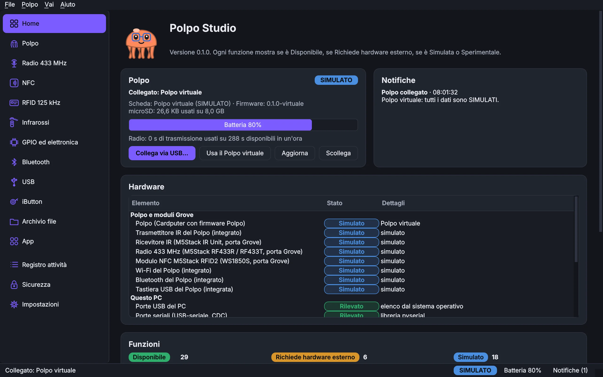
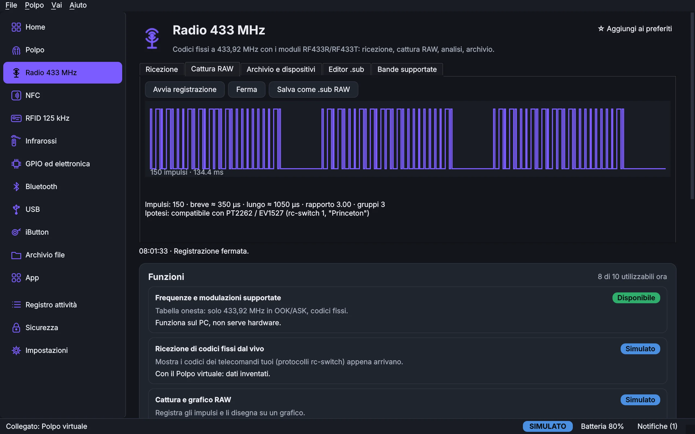
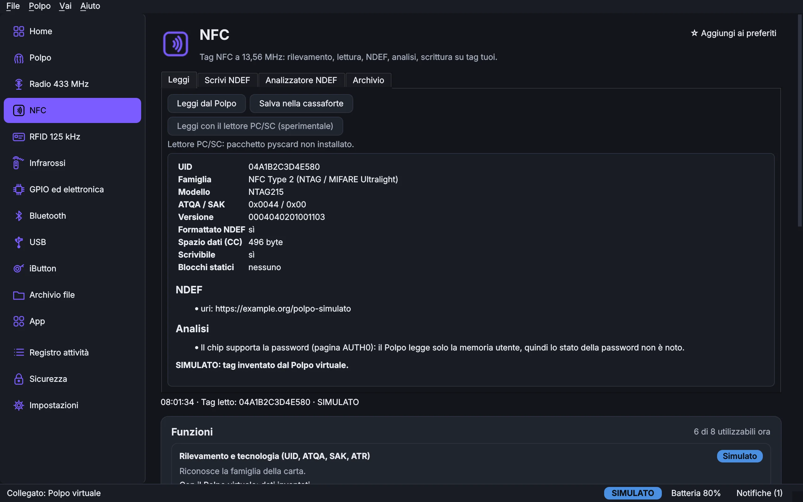
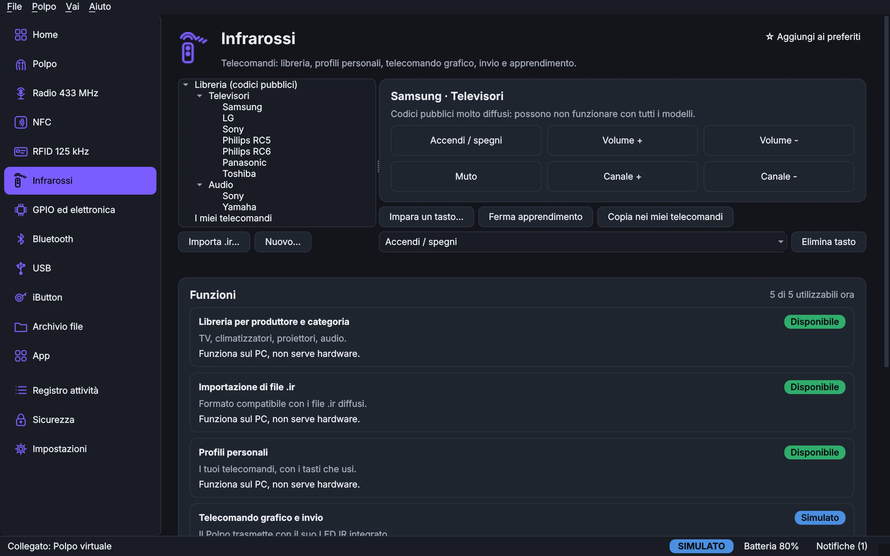
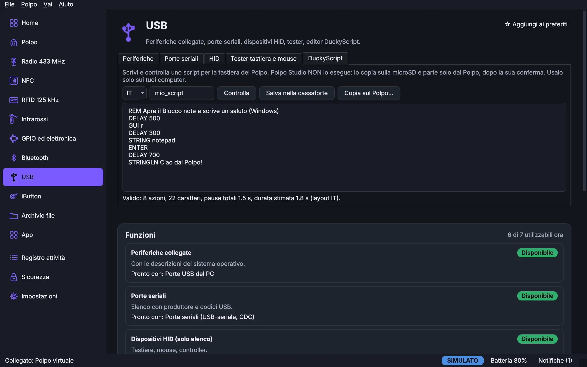
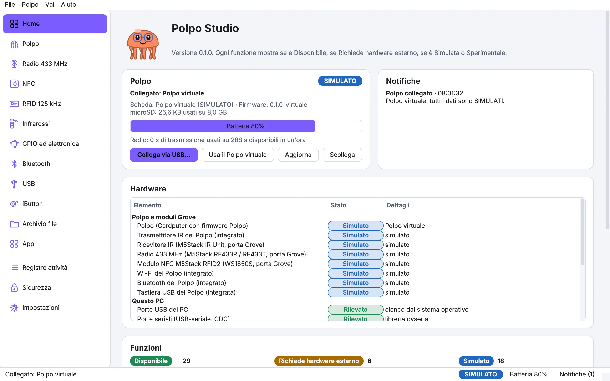

Polpo Studio · versione {{studio_version}}
Un programma libero per Windows e Linux: collega il Polpo via USB e lavora su uno schermo grande. Non hai ancora il Polpo? C'è un Polpo virtuale per provare tutto.

I moduli
Codici ricevuti dal vivo, grafico del segnale grezzo, analisi degli impulsi, archivio legato ai tuoi dispositivi, editor dei file .sub.
Lettura dei tag con analisi di blocchi e protezioni, contenuto NDEF spiegato, scrittura di link e testi sui tuoi tag.
Libreria di codici pubblici, i tuoi telecomandi personali, telecomando sullo schermo, apprendimento di nuovi tasti.
Lettura con lettori economici per PC, conversione tra i formati stampati sulle tessere, controllo del codice delle chiavi iButton.
Periferiche collegate, dispositivi Bluetooth, console seriale per Arduino ed ESP32, calcolatori, editor DuckyScript con controllo degli errori.
Tutto ciò che salvi finisce in una cassaforte cifrata. In più un catalogo di piccole app: convertitori, calcolatori, costruttore NDEF.
Niente finzioni
Polpo Studio non finge mai di avere un componente che non c'è. Ogni funzione mostra uno stato calcolato in quel momento, scritto a parole.
| Disponibile | L'hardware è collegato e riconosciuto, oppure non serve. |
| Richiede hardware esterno | Manca un componente, o non si può riconoscere da solo. |
| Simulato | Dati inventati dal Polpo virtuale: non vanno mai al Polpo vero. |
| Sperimentale | Funziona, ma non è stato provato a fondo su hardware vero. |
| Non disponibile | Escluso per sicurezza, o impossibile con questo hardware. |
Schermate
Immagini vere del programma, fatte con il Polpo virtuale.





Sicurezza
Scegli una frase di accesso di almeno 12 caratteri (quattro parole a caso vanno benissimo) e ricevi una chiave di recupero. Scrivila su carta: se dimentichi la frase è l'unico modo per riaprire la cassaforte, e nessuno può farlo al posto tuo.
Download · versione {{studio_version}}
Gratuito e libero (licenza MIT). I file arrivano dalla pagina delle versioni su GitHub.
tar xzf PolpoStudio-linux-x64.tar.gz
cd PolpoStudio-linux
./installa.sh./PolpoStudio/PolpoStudio --virtuale
Per ora si avvia dal codice, con Python 3.11 o più recente:
git clone {{repo_url}}.git polpo
cd polpo/studio
python3 -m venv .venv
. .venv/bin/activate
pip install -e .
python -m polpo_studio --virtualeOltre 130 test automatici e un'autodiagnosi che gira sui pacchetti per Windows e per Linux a ogni versione. Non è stato ancora provato con un Polpo vero, con adattatori Bluetooth o con lettori esterni: le funzioni segnate Sperimentale vanno usate con attenzione. Per controllare i file scaricati c'è l'elenco delle impronte SHA-256.